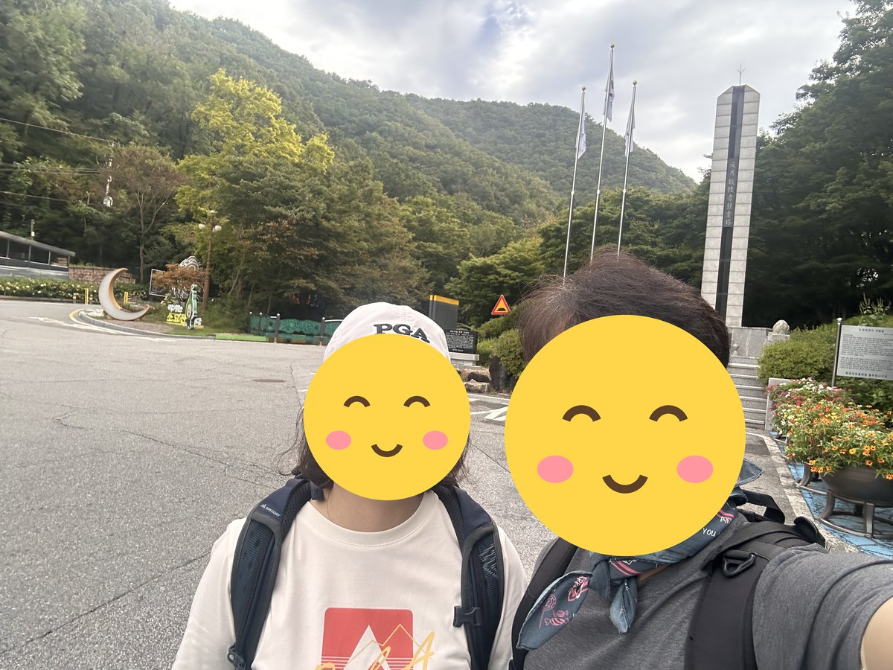
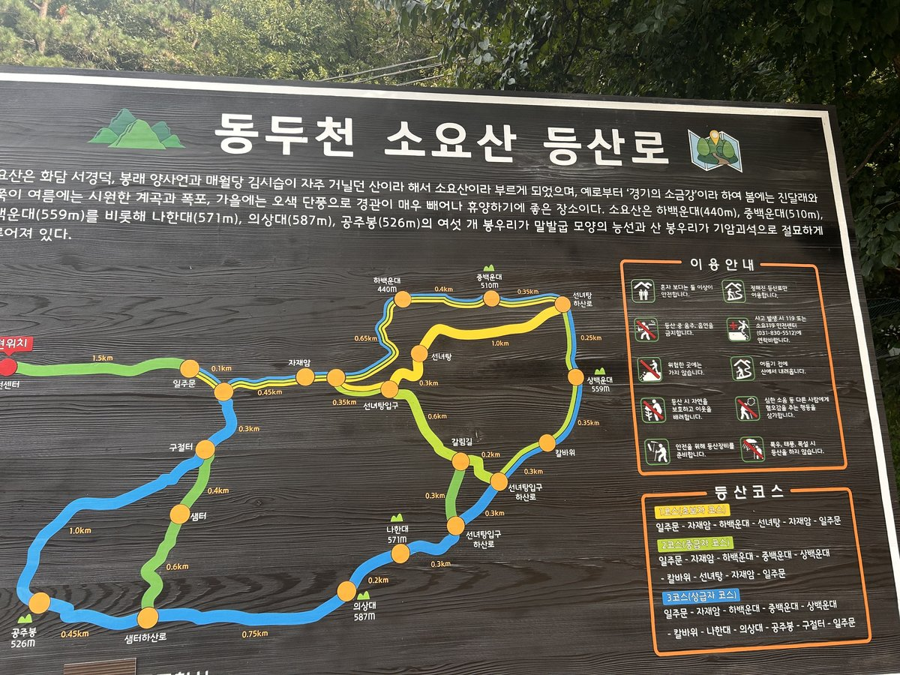
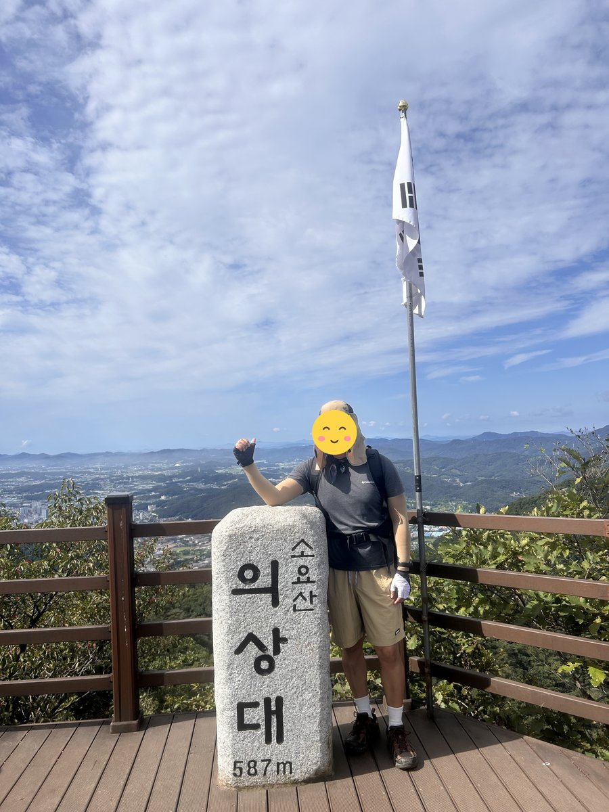
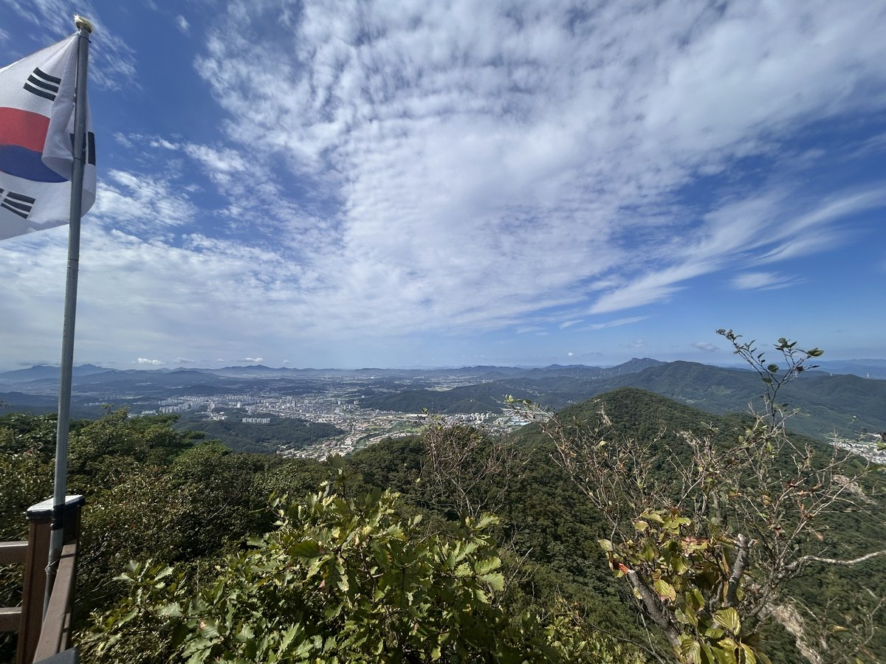
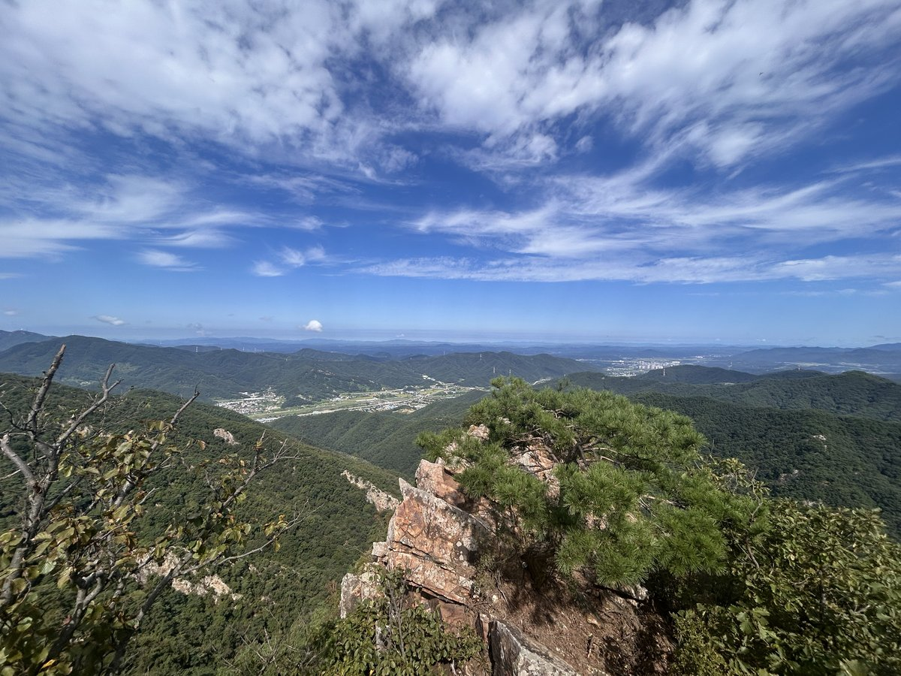
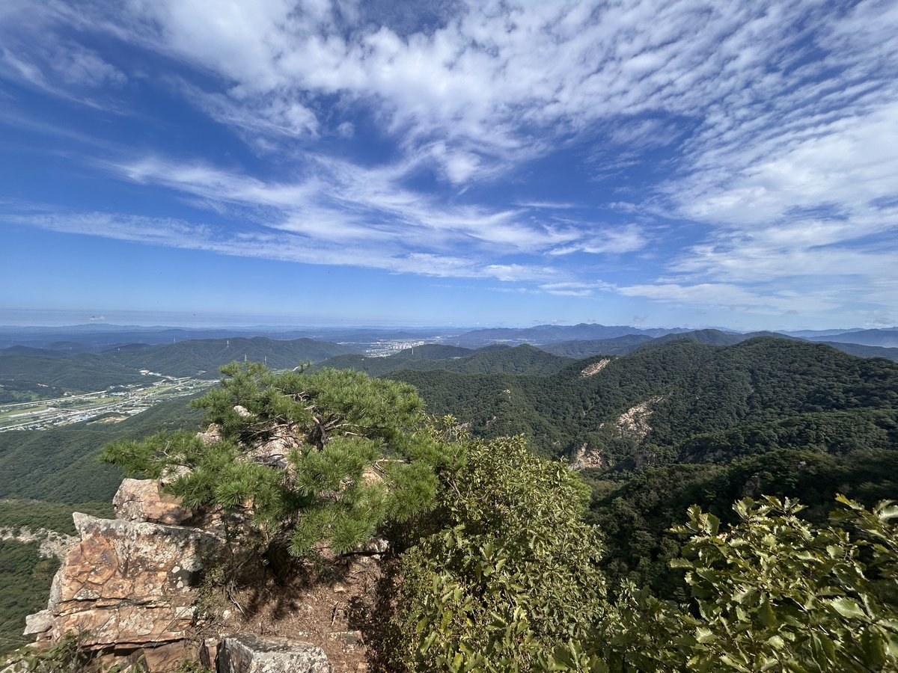
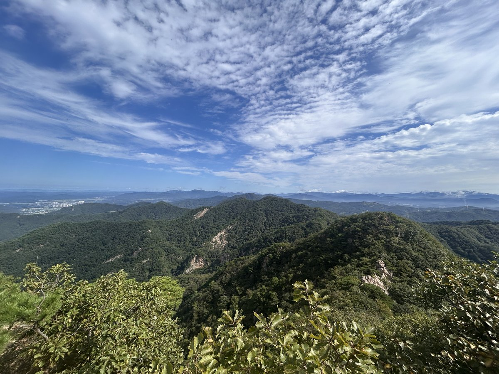
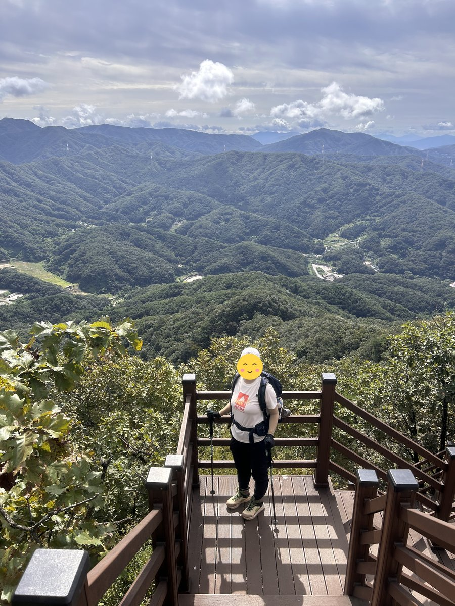
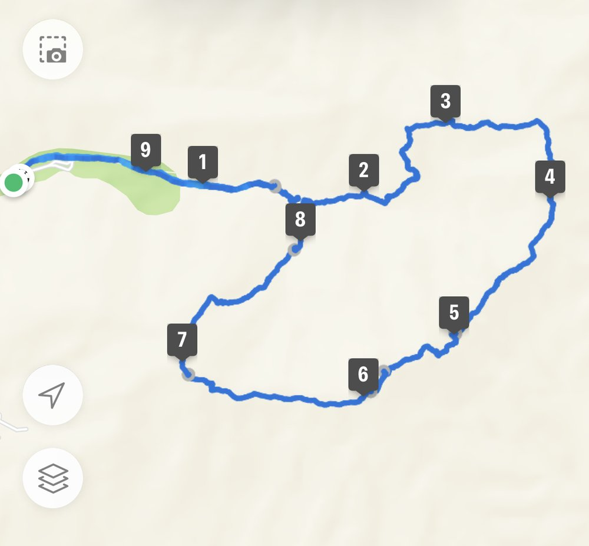

소요산은 100대 명산 중 접근성이 가장 좋은 축에 듭니다. 수도권 전철 1호선 소요산역에서 내리면 바로 국민관광지 입구입니다. 차가 없어도 부담 없이 다녀올 수 있습니다.
정상은 의상대(587m)입니다. 자재암을 지나 하백운대·중백운대·상백운대를 차례로 밟고 칼바위능선과 나한대를 지나 의상대에 오른 뒤 공주봉으로 내려오는 7.9km 순환이 대표 코스입니다. 휴식을 포함해 3시간 50분 정도입니다.
가볍게 다녀오려면 자재암을 거쳐 하백운대까지만 올라도 됩니다. 4.5km, 2시간이면 충분합니다. 가을 단풍터널이 특히 이름났습니다.
등반기록
일주문 → 공주봉 → 의상대(정상) → 나한대 → 칼바위 → 상백운대 → 중백운대 → 하백운대 → 자재암 → 일주문
일주문에서 출발
코스: 일주문 → 공주봉 → 의상대 → 나한대 → 칼바위 → 상백운대 → 중백운대 → 하백운대 → 자재암 → 일주문.
날씨가 화창하고 하늘이 맑아 등산하기 딱 좋은 날이었음.


소요산 정상, 의상대 587m
아침 7시 27분에 출발해 공주봉을 거쳐 10시 23분쯤 정상 의상대에 도착. 정상석 옆에서 인증샷을 남김.






백운대 능선을 돌아 자재암으로 하산
나한대, 칼바위, 상·중·하백운대를 차례로 지나 자재암으로 내려와 일주문에서 마침. 13시 9분 종료, 총 9.65km, 5시간 42분이 걸림.

이 산의 포인트
- 전철 1호선 소요산역 도보 접근
- 자재암과 단풍터널길
- 하백운대·중백운대·상백운대·나한대·의상대·공주봉 연계
- 전체 순환 7.9km·3시간 50분
등산 코스
| 코스 | 거리 | 소요 | 난이도 |
|---|---|---|---|
| 전체 순환 (대표) 관광지 주차장 → 자재암 → 하백운대 → 중백운대 → 상백운대 → 칼바위능선 → 나한대 → 의상대 → 공주봉 → 구절터 → 원점 |
약 7.9km | 3시간 50분 | 중 |
| 자재암·하백운대 왕복 (입문) 주차장 → 자재암 → 하백운대 → 원점 |
약 4.5km | 2시간 | 하 |
인증장소
정상인 의상대 표지에서 인증합니다. 하백운대·공주봉과 혼동하지 마세요.
가는 길
- 자가용
- 소요산국민관광지 주차장을 이용합니다.
- 대중교통
- 수도권 전철 1호선 소요산역에서 도보로 접근합니다. 100대 명산 중 대중교통 접근이 가장 쉬운 편입니다.
주차장
- 소요산 공영주차장경기 동두천시 상봉암동
1호선 소요산역이 바로 옆이라 전철이 매우 편한 산입니다. 단풍철 주말에는 주차장이 이릅니다.
주차 요금과 면수는 자주 바뀌고 성수기에는 임시 주차장·셔틀이 운영되기도 합니다. 출발 전에 지도 앱이나 공원 사무소로 한 번 더 확인하세요.
맛집
동두천·의정부라 부대찌개가 대표입니다. 소요산 입구에는 제육쌈밥과 떡갈비를 내는 집이 모여 있습니다.
- 미식 쌈밥들머리에서 2.4km경기도 동두천시 신천로231번길 35-11 (안흥동)
- 호수식당 본점들머리에서 4.4km경기도 동두천시 중앙로 312 (생연동)
- 예지원들머리에서 5.8km경기도 동두천시 삼육사로 1142 (생연동)
- 유정부대찌개들머리에서 2.1km경기도 동두천시 평화로 2718 (동두천동)
- 황주생고기들머리에서 4.9km경기도 동두천시 생연로 142 (생연동)
한국관광공사에 등록된 음식점입니다. 맛집 순위가 아니며, 영업시간과 휴무일은 바뀔 수 있으니 먼 길이라면 미리 전화해 보세요.
언제 가면 좋은가
가을 단풍이 특히 유명해 10월 말 주말에는 극심하게 붐빕니다. 봄가을이 가장 좋습니다.
알아두면 좋은 것
- 차 없이 다녀오기 가장 편한 100대 명산입니다.
- 인증은 의상대에서 해야 하니 하백운대까지만 오르는 코스와 혼동하지 마세요.
- 단풍철 주말은 관광지 구간부터 정체가 시작됩니다.